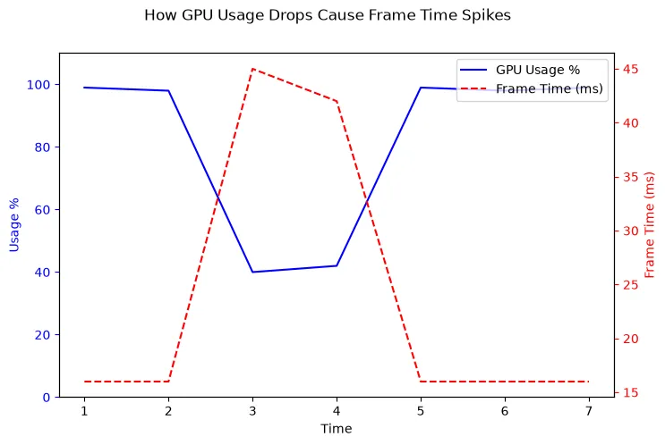
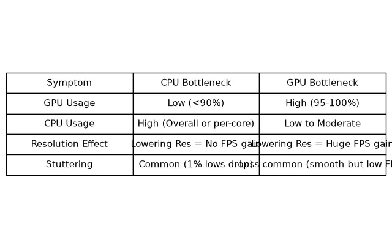
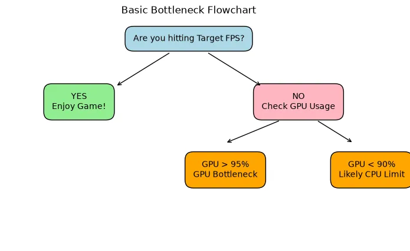

CPU Bottleneck vs GPU Bottleneck: Symptoms, Causes and How to Fix
Is your PC stuttering because of the processor or the graphics card? Learn the distinct symptoms of CPU vs GPU bottlenecks and how to diagnose your system limits accurately.
Every PC has a bottleneck. It is physically impossible to build a computer that has infinite performance; eventually, one component will reach its maximum capacity and dictate the speed of the entire system.
The goal of PC building is not to eliminate bottlenecks entirely, but to ensure the bottleneck lands on the correct component (usually the GPU) and provides a smooth experience. In this guide, we will compare the symptoms of a CPU bottleneck versus a GPU bottleneck so you can diagnose performance issues accurately.
Quick Answer / TL;DR
A CPU bottleneck happens when the processor is too slow, causing stuttering, high CPU usage, and low GPU usage. Changing resolutions won't fix it. A GPU bottleneck happens when the graphics card is working at 100% capacity, resulting in lower (but usually smooth) frame rates. Lowering the resolution or graphics settings will immediately increase FPS in a GPU bottleneck.
What is a CPU Bottleneck?
A CPU bottleneck occurs when the processor is unable to calculate the game's logic, AI, and physics fast enough to keep the graphics card busy. The GPU finishes rendering a frame and then sits idle, waiting for the CPU to give it the next set of instructions.
Symptoms of a CPU Bottleneck
- Low GPU Utilization: Your GPU usage hovers below 85% (e.g., 40-70%) despite having an uncapped frame rate.
- High CPU Core Utilization: Your overall CPU usage may look fine (e.g., 50%), but one or two specific processing cores are pinned at 95-100%.
- Severe Stuttering: The game feels jerky. Your 1% low FPS (the lowest frame rates recorded over time) are terrible compared to your average FPS.
- Resolution Testing Fails: Lowering the game's resolution from 1440p to 1080p or 720p results in zero increase in frame rate.

What is a GPU Bottleneck?
A GPU bottleneck is the opposite. The processor is calculating game logic incredibly fast and sending instructions to the graphics card. However, the graphics card is overwhelmed by the visual complexity (textures, lighting, resolution) and cannot render the frames fast enough.
Important: A GPU bottleneck is generally the desired state for a gaming PC. If you paid $800 for a graphics card, you want it working at 100% capacity to give you the best visuals possible.
Symptoms of a GPU Bottleneck
- Maxed GPU Utilization: Your GPU usage is consistently between 95% and 100%.
- Low CPU Utilization: Your processor is relaxed, running at low percentages because it has plenty of time to calculate while waiting for the GPU.
- Consistent, Smooth Frame Pacing: Even if the frame rate is low (e.g., 45 FPS), it is usually a smooth, consistent 45 FPS without severe stuttering or micro-freezes.
- Resolution Testing Succeeds: Lowering the resolution or turning down graphics settings (like shadows or anti-aliasing) immediately results in higher FPS.

How to Diagnose Your Bottleneck (The Resolution Test)
The fastest way to determine which component is limiting your performance is the Resolution Test.
- Launch a demanding game, uncap the frame rate (turn off V-Sync), and record your average FPS at your normal resolution.
- Go into the graphics settings and drop the resolution drastically (e.g., from 4K to 1080p, or 1440p to 720p). Do not change any other settings.
- Play the game again and record the average FPS.
The Results:
- If your FPS skyrocketed (e.g., from 50 FPS to 120 FPS), you had a GPU Bottleneck. Your CPU was always capable of 120 FPS; the GPU just couldn't draw the high-resolution pixels fast enough.
- If your FPS stayed exactly the same (e.g., 50 FPS to 53 FPS), you have a CPU Bottleneck. The CPU cannot process the game logic any faster, regardless of how easy you make the GPU's job.

How to Fix Each Bottleneck
Fixing a CPU Bottleneck
As detailed in our full guide on how to reduce CPU bottlenecks, your options include:
- Capping your frame rate to stabilize frame pacing and reduce stuttering.
- Closing background applications (browsers, Discord, Spotify) to free up CPU cycles.
- Increasing the resolution to shift the workload back to the GPU.
- Lowering CPU-intensive settings like draw distance or crowd density.
- Upgrading the CPU, motherboard, and/or RAM.
Fixing a GPU Bottleneck
Fixing a GPU bottleneck is much more straightforward. You simply need to reduce the visual complexity of the game:
- Lower the game's resolution.
- Use upscaling technologies like NVIDIA DLSS or AMD FSR.
- Lower graphics settings (Shadows, Volumetric Lighting, Textures).
- Turn off Ray Tracing, which is incredibly demanding on the GPU.
- Upgrade the graphics card.
Why Bottleneck Percentages Are Not Absolute
It is important to remember that a "bottleneck" is not a permanent, static number attached to your PC. It is a fluid state that changes depending on the workload.
A system pairing a Ryzen 5 5600X and an RTX 4070 might be CPU bottlenecked while playing *Counter-Strike 2* at 1080p (where the GPU easily renders 400 FPS, but the CPU maxes out). That exact same computer will be heavily GPU bottlenecked if you launch *Cyberpunk 2077* at 4K with Overdrive Ray Tracing (where the GPU struggles to render 30 FPS, while the CPU relaxes).
How the Bottleneck Calculator Can Help
If you are planning a new build or considering an upgrade, our PC Bottleneck Calculator can help you estimate which component will be the limiting factor. By selecting your CPU, GPU, and target resolution, the calculator provides a general assessment of your system's balance, helping you avoid severe mismatches before you spend money.
Frequently Asked Questions
Is a CPU bottleneck worse than a GPU bottleneck?
Yes. A CPU bottleneck is generally much worse because it often results in severe stuttering, input lag, and an inconsistent frame rate. A GPU bottleneck usually results in a lower, but smooth and consistent, frame rate, which most gamers find more playable.
How to tell if CPU is bottlenecking GPU?
If your GPU usage is constantly below 85% in demanding games, and lowering the resolution does not increase your frame rate, your CPU is bottlenecking your GPU.
Does RAM cause a bottleneck?
Yes. If you do not have enough RAM capacity, or if your RAM is very slow or running in single-channel mode, it will starve the CPU of data, artificially creating a severe CPU bottleneck.
Can a monitor cause a bottleneck?
Technically, yes. If you have an incredibly powerful PC capable of 300 FPS, but you connect it to a standard 60Hz 1080p monitor, the monitor is bottlenecking your visual experience because it physically cannot display more than 60 frames per second.
Final Takeaway
Understanding the difference between CPU and GPU bottleneck symptoms is the key to PC troubleshooting. By monitoring your usage percentages and running a simple resolution test, you can pinpoint exactly what is holding your system back and make informed decisions about software tweaks or hardware upgrades.